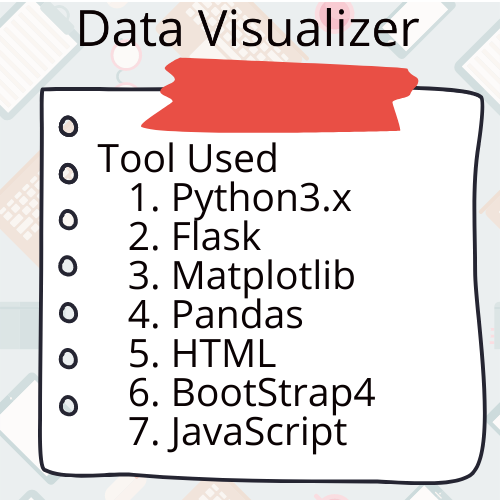
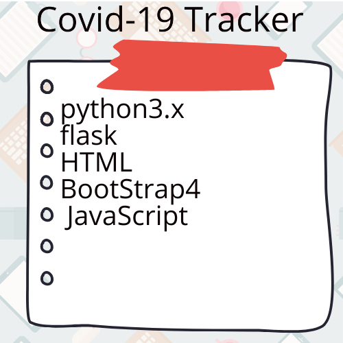

This is a telegram based chatbot which can answer queries regarding Covid-19 virus. Also it can speak about the numbers in a particular area upto district level for any Indian state.github.com/telegram_chat_bot

Using this webapp we can filter CSV data based on row and column values. We can view the results in both text format as well as generate graphs for the filtered data.github.com/data_visualizer

This webapp keeps track of the covid-19 spread in India using data from certain APIs. This tracker has a choropleth map of India which visualizes the spread of covid-19 virus.github.com/Covid-19 tracker